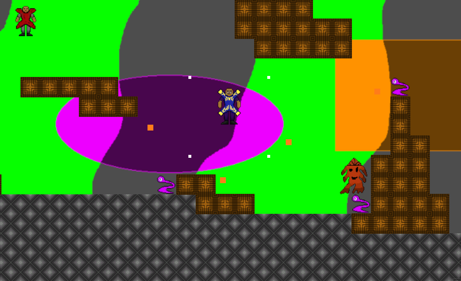

Recently, I created a game prototype with my teammate David. He did the art, and I did the programming in Unity.

The game is called Room of Terror, and it’s a 2D platforming battle arena. The player is a human fighting to survive in this hostile world where aliens are trying to eliminate them. They can shoot bullets diagonally to eliminate the aliens, and can jump and move around to try and avoid the aliens’ attacks.
The game can be played here on itch.io. The controls are W/D or left/right arrow to move, space to jump, and J or C or left click to shoot. There isn’t a defined goal right now, so the game is just surviving as long as possible.
As for the game credits—David created the art and most of the sound effects, and I programmed the mechanics, made the background music, and created the level. I got the player damage sound from DRAGON-STUDIO on Pixabay.
If we were to continue working on this, the next steps to work on are adding new enemies (which David has already made art for), fixing the enemy spawn system (they can spawn inside the tiles…), and adding a way to reset the game on game over as well as a form of player motivation (a timer that counts up). Another thing I would add are powerups that the player can collect during gameplay.
Anyway, I think it’s a game that has somewhat cool potential if it were to get a bunch of these polish updates. I may attempt to work on a board game for my final project instead, though… that’s where my heart lies right now. Thanks for reading!